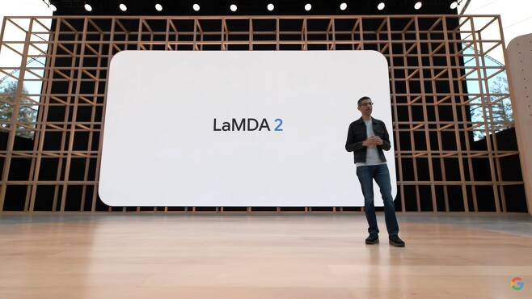
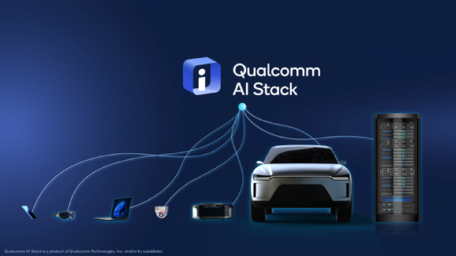

-

AI도
생각하고
말할 수 있다
vs
인간의
대화 유형을
모방하는 것
-

퀄컴, 신규 통합 AI 스택 포트폴리오 공개
향상된 AI 기능 지원 및 제조사와 개발자 위한 효율성 제공
[아이뉴스24 김문기 기자] 퀄컴은 ‘퀄컴 AI 스택’ 포트폴리오를 공개하고, AI 및 커넥티드 지능형 엣지 리더십을 강화한다고 23일 발표했다...................... -
[위클리 스마트] '파죽지세' 서비스형 랜섬웨어 증가에 보안업계 긴장
(서울=연합뉴스) 오규진 기자 = 올해 들어 서비스형 랜섬웨어(RaaS) 감염 사례가 급격히 늘어나면서 보안업계가 촉각을 곤두세우고 있다. 서비스형 랜섬웨어는 전문 대행업자가 의뢰인의 주문을 받아 대신 제작한 랜섬웨어다.......................
-
알트코인 30% 급등에도..코인업체 줄도산 '위기'
[이데일리 최훈길 기자] 미국 뉴욕 증시가 반등하면서 코인 시장이 반등했다. 일부 코인은 1주일새 30% 넘게 급등했다. 그럼에도 루나·테라 사태 이후 직격탄을 맞은 코인 시장에 미국의 경기침체 우려, 잇단 금리 인상.......................
-
-
-
"우리 기업에 맞는 RPA를 찾아라" 자동화ㆍ오케스트레이션 툴 10가지
IT 프로세스 자동화의 효과는 따로 설명이 필요 없다. 작업을 자동화하는 것은 인건비를 들여 반복적인 작업을 수행하는 방식에 비해 비용이 덜 들고 더 효율적이며 예측 가능하다. 기업 내부적으로 자동화 툴을 개발할 수도 있지만 쉽지 않은 일이므로 자동화를 본격적으로 도입하기 위해서 .......................